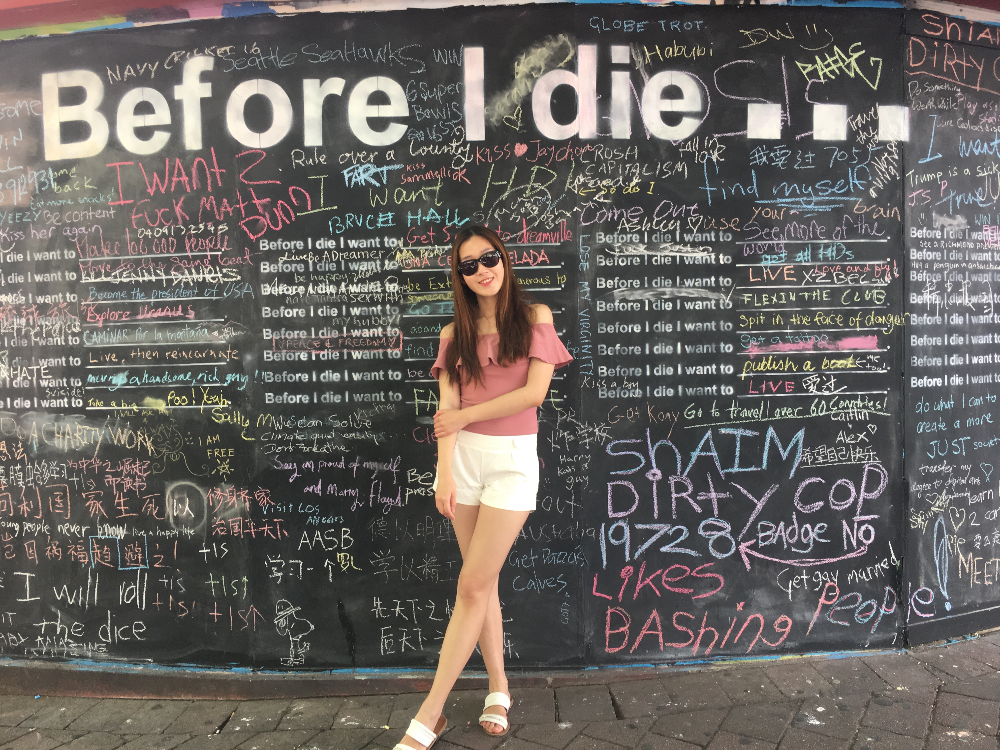

MyPassion.com is an online self-presentation platform to show my passion, favourite news and story to the world. Unlike other individual blog which only provide personal reflection or travel notes, MyPassion.com is dedicate to present how I cherish my friendship and how I enjoy my life in three ways: Inspiration, Innovation & Imagination. Feel free to watch my story video to know more details. Don't forget to follow me in all the social media channels!
My name is Lanmixue Mao (Michelle).
- A Master of Computing student in ANU.
- A proactive, skilled and self-motivated web developer with proven expertise in working on multiple tools to drive improvements in a web based environment.
- A quick learner who can absorb new ideas and a committed team player who is confident to communicate with all levels.
My Goals
- Design my passion exclusive logo
- Standout the content by providing relevant image
- Create quick back to top button to avoid scroll up
- Display the photo gallery in full width slider show
- Design a comic storyboard to convey a story
- Create a dynamic sitemap that mouse hover can change menu image
- Provide contact information to boost the engagement with visitors
- Raise site profile by design banner and background image in pink theme
- Implement Freebie responsive footer template to show address and social media buttons
- Implement Google Map API to show my location
- Follow up the feedback by submitting a contact form
- Implement AddToAny share buttons to grow more visitors
- Increase visitors by introducing my story from a video
- Display photo gallery to present my interest and hobby
- Summarize the website construction ideas in “about my site” page
- Apply RSS feed technology to allow visitors to convert my post to a feed
- Interact with visitors with a feedback form to improve the user experience
- Display different types of feedback, include single choice, multiple choice and free-response question